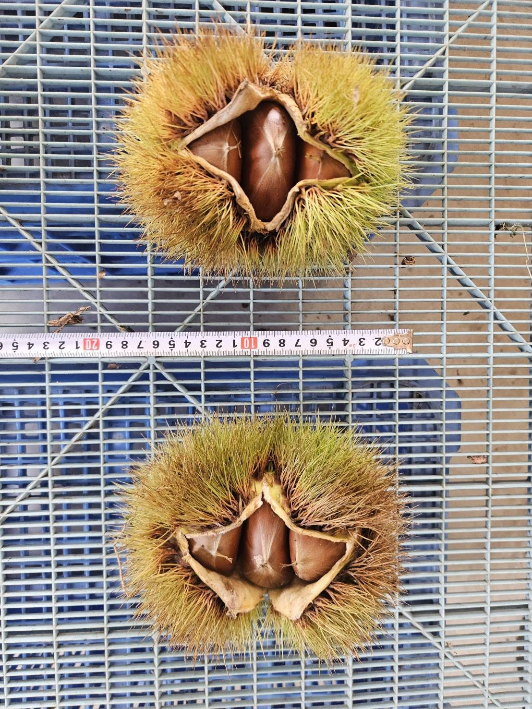
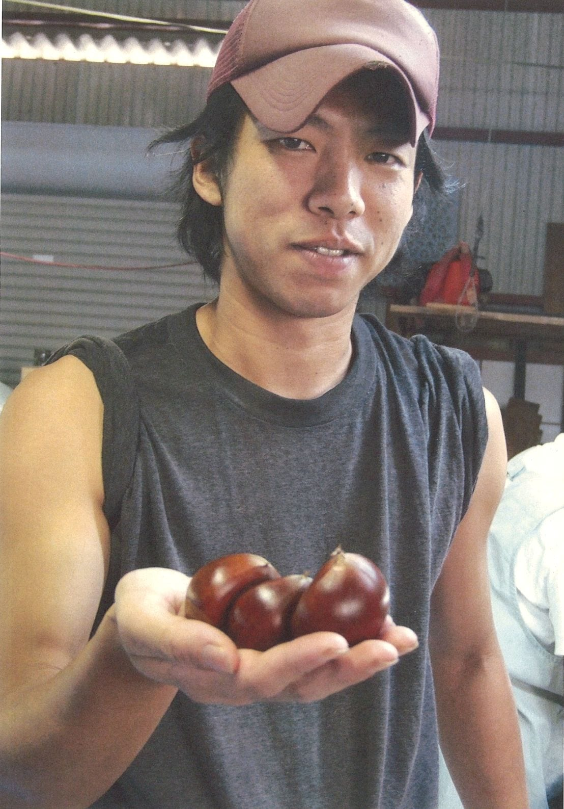

圧倒的な「大玉」の証
私たちが収穫する栗の9割以上が3L以上——それだけでなく、愛媛県内でも稀な7Lサイズ（70g超）を毎年安定して実らせることができる農園。その数字が語る事実と、大玉を生み出す力の源をご紹介します。
7Lとは、どのくらいの大きさか
一般的にスーパーで「大粒」として並ぶ栗は3L（約30g前後）。小屋敷農園では、その2倍以上の重さを誇る7Lサイズ（70g超）の栗が毎年収穫されます。手のひらに置いた瞬間のずっしりとした重みは、一度体験したら忘れられないものです。市場に出回る「大玉栗」とは、根本的に別物と言っていいほどの存在感があります。

9割以上が大玉——「たまに採れる」ではなく
驚くのは最大サイズだけではありません。小屋敷農園で収穫される栗全体の9割以上が、市場で「大玉」と呼ばれる3L以上のサイズです。大きな栗が「たまに採れる」のではなく、「ほとんどが大玉」という圧倒的な安定性——これこそが、私たちの栽培技術の真骨頂です。規格外の大きさを毎年一定の割合で実らせることは、適切な剪定・夏剪定・添え木の三位一体の管理なくしては決して実現できません。
大玉を生む、3つの管理
01 約2,500本の添え木
栗の実が大きくなるにつれ、その重みで枝が折れてしまう危険があります。小屋敷農園では、園地全体の約2,500本もの枝に対して、一本一本丁寧に添え木を施します。枝が安定することで樹木は余計なストレスを受けず、栄養を実に集中させることができます。この地道な手仕事こそが、大玉を毎年安定して実らせる基盤となっています。
02 夏の剪定（夏剪定）
枝が混み合うと日当たりや風通しが悪くなり、実が小さくなってしまいます。私たちは冬の剪定だけでなく、夏にも込み合った枝や徒長枝を整理する「夏剪定」を行います。余分な枝を整えることで、残した実にしっかりと日光と栄養が行き渡り、手のひらを覆うような大玉へと育ちます。手間はかかりますが、大玉を生む上で欠かせない工程です。
03 収穫時期の分散
小屋敷農園では、早生品種から晩生品種まで複数の品種を栽培しています。収穫時期をあえて分散させることで、一時期に集中して収穫する負担を避け、一粒ずつに丁寧に目が届く体制を維持しています。この余裕が、品質管理の精度を高め、大玉のみを厳選して出荷するための重要な土台になっています。
大玉が実る土台——土と苗
大玉を生む力の根本には、土と苗の質があります。自家で育てた自生苗を使い、その土地の気候と土壌に完全に適応した生命力ある木だけを使うこと。そして化学肥料は控えめにとどめ、剪定枝を還元した循環型の豊かな土壌が、栗の根をしっかりと支えています。栽培の詳細は「こだわり」のページでご紹介しています。